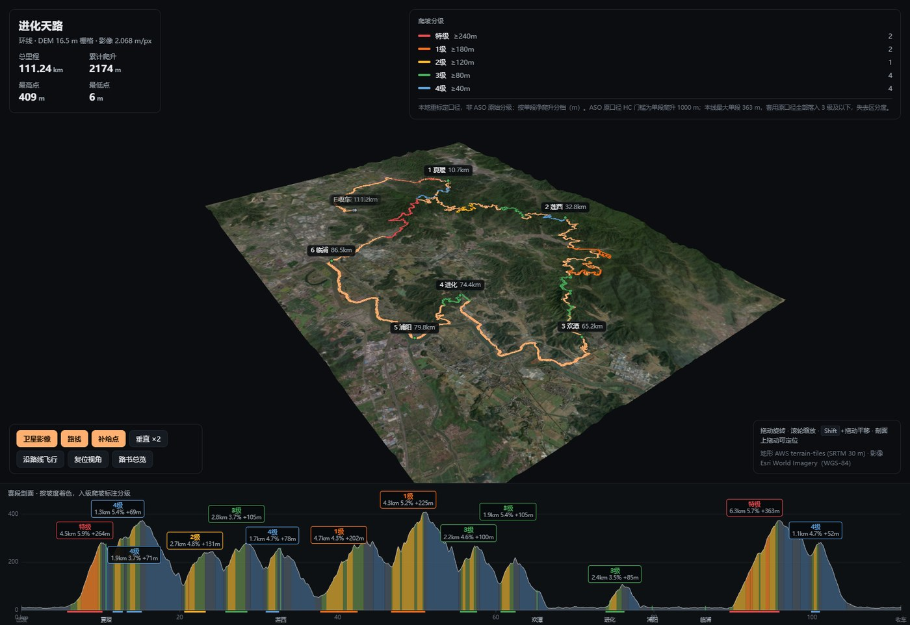

三维视图要 WebGL2，手机上（尤其微信内置浏览器）可能不支持， 会显示提示并给一个链接跳到路书页。路书页是 2D canvas，没有这个要求。 首次打开要载入 6 MB（地形栅格 2.5 MB + 卫星影像 3.3 MB）。
git clone https://github.com/wangyiyun-hub/route-studio
cd route-studio
pip3 install --user Pillow numpy
./route-studio new myroute ~/Downloads/xxx.gpx
$EDITOR routes/myroute/route.toml # 唯一手工编辑的文件
./route-studio all myroute # 抓 DEM + 影像，推导剖面，规划，构建
./route-studio serve myroute
route.toml 只放测不出来的东西：标题、爬坡分级阈值、渲染参数，
以及补给点（哪儿算补给、靠不靠得住、停多久）。其余一律计算 ——
坐标、海拔、剖面、分段、无补给空档、时刻表。
<ele> 全为 0，
所有高程来自 DEM。地形的几何精度上限就是 SRTM 的 30 m；
「逼真」主要来自卫星影像，不是来自高程。